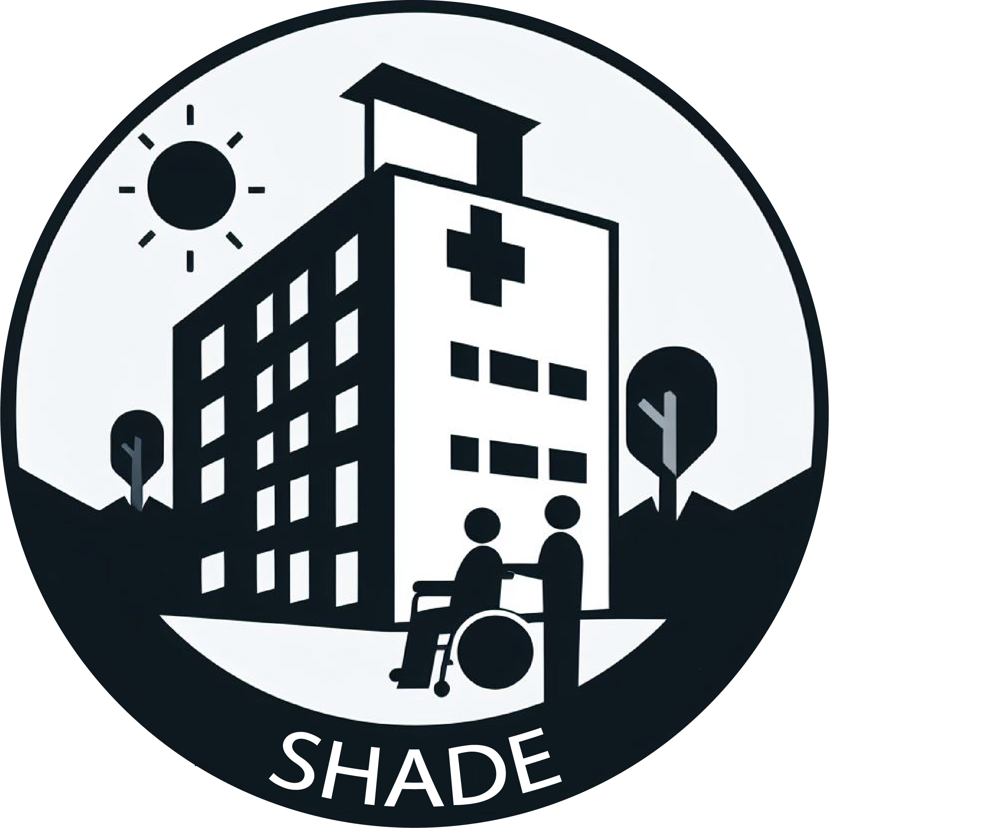

During hospitalisation, older adults are at risk of developing functional decline unrelated to the condition for which they were admitted. The loss of independence in at least one activity of daily living is referred to as hospital-associated disability (HAD). According to current reports, the incidence of HAD is 37% (Giacomino et al. 2023). Different interventions are proposed to prevent HAD (such as physical exercises), but it is often difficult to apply the results obtained in the studies into practice. These studies usually only specify the type of training to be done, such as strength training, without specifying any specific exercises or progression options. The objective is to evaluate the effectiveness of physical interventions in patients who are hospitalised or in a rehabilitation setting because of HAD and to develop a targeted training programme.
The SHADE project is divided into four work packages (WPs). In WP 1, we will perform a living systematic review with network meta-analysis, which evaluates the effectiveness of physical interventions that target HAD in older adults in the hospital or rehabilitation setting. WP 2 will aim to develop a system to organise and semi-automate the steps of the living systematic review. WP 3 will aim to validate a training programme and a clinical guideline with the highest current level of effectiveness based on the results of WP 1 and WP 2 with experts. WP 4 will aim to develop a web-based interactive platform for clinicians and patients that will include several components such as the updated results of the systematic review, a presentation of the guidelines of the exercise programme for clinicians, and a ready-to-use exercise programme for patients.
Clinicians will be able to keep up to date with new evidence in the field of HAD prevention. The results of this study are highly relevant to practice as those physical interventions preventing HAD are expected to decrease health costs and improve patient outcomes in the hospital phase. Furthermore, these results may potentially reduce the number of re-hospitalisations or costs related to home care.
The SHADE project is funded by the SNSF funding scheme “Health and wellbeing”.
For more information about the project, please visit: https://had-prevention.netlify.app